This section shows the high-level design that supports various notification types: iOS push notification, Android push notification, SMS message, and Email. It is structured as follows:
•Different types of notifications
•Contact info gathering flow
•Notification sending/receiving flow
We start by looking at how each notification type works at a high level.
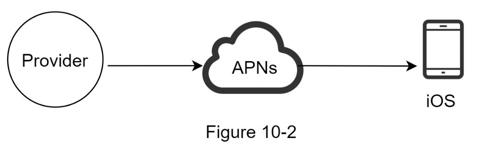
We primary need three components to send an iOS push notification:
•Provider. A provider builds and sends notification requests to Apple Push Notification Service (APNS). To construct a push notification, the provider provides the following data:
•Device token: This is a unique identifier used for sending push notifications.
•Payload: This is a JSON dictionary that contains a notification’s payload. Here is an example:
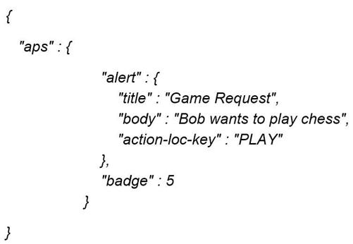
•APNS: This is a remote service provided by Apple to propagate push notifications to iOS devices.
•iOS Device: It is the end client, which receives push notifications.
Android adopts a similar notification flow. Instead of using APNs, Firebase Cloud Messaging (FCM) is commonly used to send push notifications to android devices.
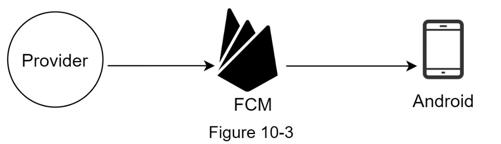
For SMS messages, third party SMS services like Twilio [1], Nexmo [2], and many others are commonly used. Most of them are commercial services.
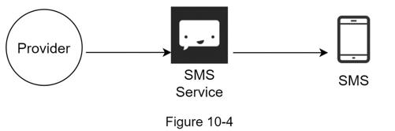
Although companies can set up their own email servers, many of them opt for commercial email services. Sendgrid [3] and Mailchimp [4] are among the most popular email services, which offer a better delivery rate and data analytics.
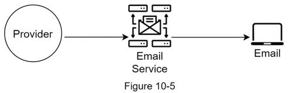
Figure 10-6 shows the design after including all the third-party services.
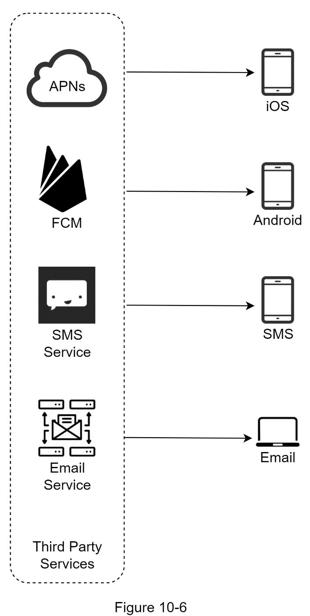
To send notifications, we need to gather mobile device tokens, phone numbers, or email addresses. As shown in Figure 10-7, when a user installs our app or signs up for the first time, API servers collect user contact info and store it in the database.
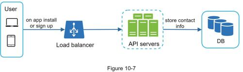
Figure 10-8 shows simplified database tables to store contact info. Email addresses and phone numbers are stored in the user table, whereas device tokens are stored in the device table. A user can have multiple devices, indicating that a push notification can be sent to all the user devices.
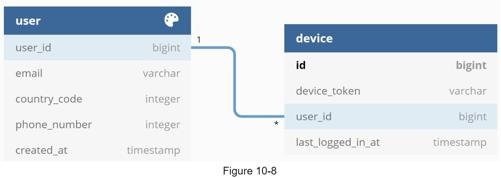
We will first present the initial design; then, propose some optimizations.
High-level design
Figure 10-9 shows the design, and each system component is explained below.
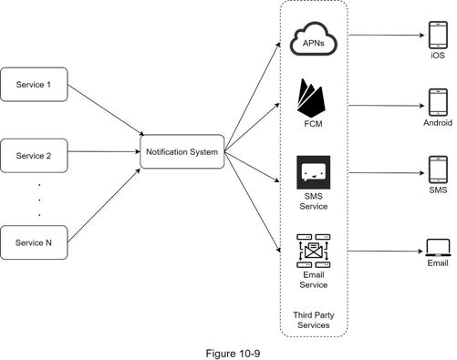
Service 1 to N: A service can be a micro-service, a cron job, or a distributed system that triggers notification sending events. For example, a billing service sends emails to remind customers of their due payment or a shopping website tells customers that their packages will be delivered tomorrow via SMS messages.
Notification system: The notification system is the centerpiece of sending/receiving notifications. Starting with something simple, only one notification server is used. It provides APIs for services 1 to N, and builds notification payloads for third party services.
Third-party services: Third party services are responsible for delivering notifications to users. While integrating with third-party services, we need to pay extra attention to extensibility. Good extensibility means a flexible system that can easily plugging or unplugging of a third-party service. Another important consideration is that a third-party service might be unavailable in new markets or in the future. For instance, FCM is unavailable in China. Thus, alternative third-party services such as Jpush, PushY, etc are used there.
iOS, Android, SMS, Email: Users receive notifications on their devices.
Three problems are identified in this design:
•Single point of failure (SPOF): A single notification server means SPOF.
•Hard to scale: The notification system handles everything related to push notifications in one server. It is challenging to scale databases, caches, and different notification processing components independently.
•Performance bottleneck: Processing and sending notifications can be resource intensive. For example, constructing HTML pages and waiting for responses from third party services could take time. Handling everything in one system can result in the system overload, especially during peak hours.
High-level design (improved)
After enumerating challenges in the initial design, we improve the design as listed below:
•Move the database and cache out of the notification server.
•Add more notification servers and set up automatic horizontal scaling.
•Introduce message queues to decouple the system components.
Figure 10-10 shows the improved high-level design.
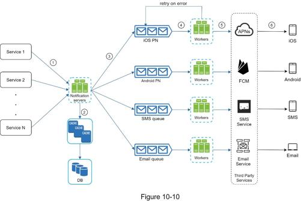
The best way to go through the above diagram is from left to right:
Service 1 to N: They represent different services that send notifications via APIs provided by notification servers.
Notification servers: They provide the following functionalities:
•Provide APIs for services to send notifications. Those APIs are only accessible internally or by verified clients to prevent spams.
•Carry out basic validations to verify emails, phone numbers, etc.
•Query the database or cache to fetch data needed to render a notification.
•Put notification data to message queues for parallel processing.
Here is an example of the API to send an email:
POST https://api.example.com/v/sms/send
Request body
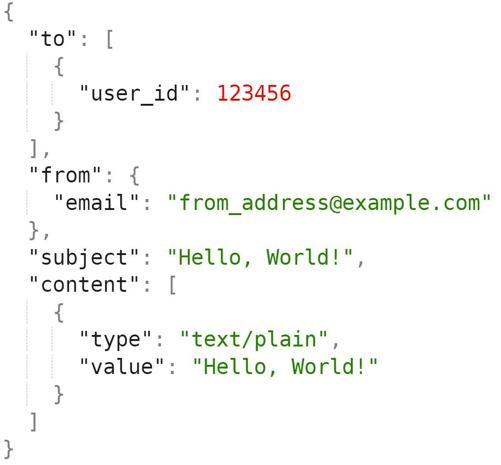
Cache: User info, device info, notification templates are cached.
DB: It stores data about user, notification, settings, etc.
Message queues: They remove dependencies between components. Message queues serve as buffers when high volumes of notifications are to be sent out. Each notification type is assigned with a distinct message queue so an outage in one third-party service will not affect other notification types.
Workers: Workers are a list of servers that pull notification events from message queues and send them to the corresponding third-party services.
Third-party services: Already explained in the initial design.
iOS, Android, SMS, Email: Already explained in the initial design.
Next, let us examine how every component works together to send a notification:
1. A service calls APIs provided by notification servers to send notifications.
2. Notification servers fetch metadata such as user info, device token, and notification setting from the cache or database.
3. A notification event is sent to the corresponding queue for processing. For instance, an iOS push notification event is sent to the iOS PN queue.
4. Workers pull notification events from message queues.
5. Workers send notifications to third party services.